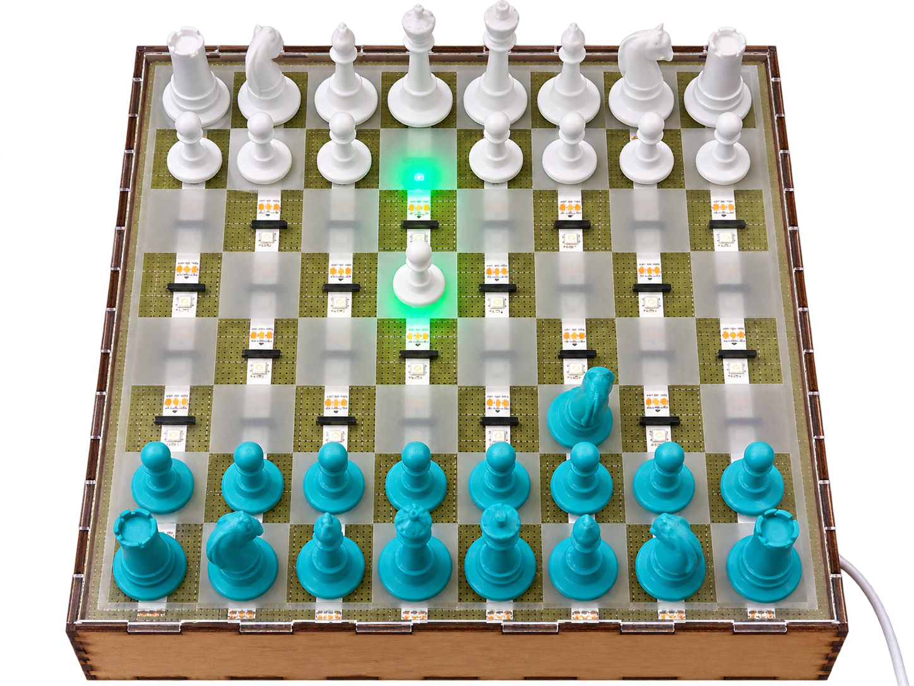
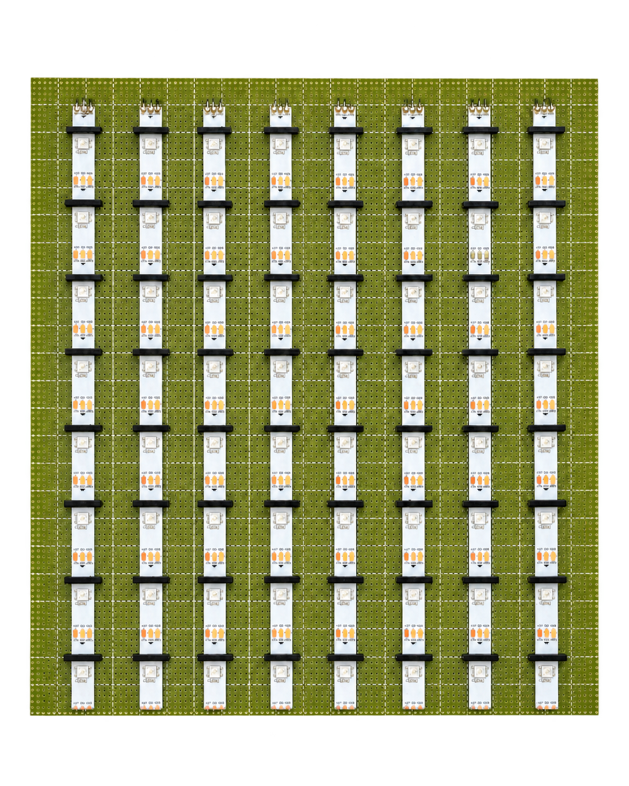
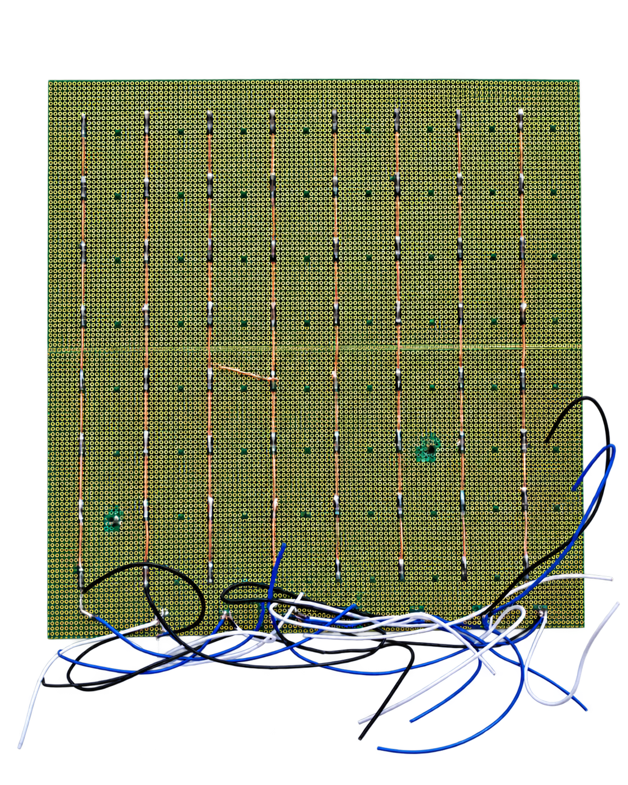
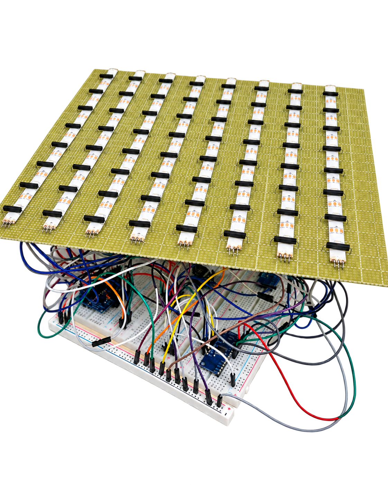
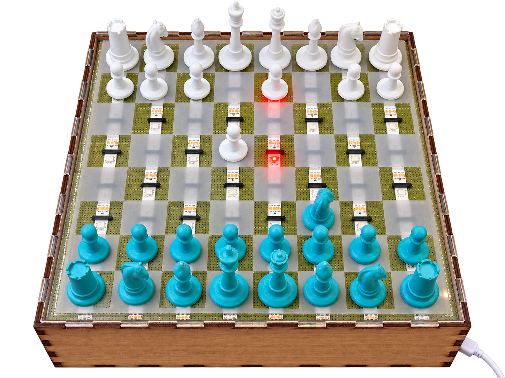

1. Detect
Magnetic chess pieces interact with reed switches beneath the board to detect piece positions.
Smart Chessboard is a four-person team project that combines a physical chessboard with real-time move guidance.
The project was developed in ENT 164: Intro to Making, a hands-on course focused on building the practical skills needed to turn product ideas into working prototypes.
Instead of requiring players to switch to a digital chess app, the board detects piece positions and communicates recommended moves directly through LEDs embedded beneath the playing surface.

Digital chess tools can provide feedback and move recommendations, but using them often pulls the player away from the physical experience of playing on a chessboard.
We explored how to bring digital guidance directly into over-the-board play—keeping the tactile chess experience while providing real-time move recommendations through the board itself.
Magnetic chess pieces interact with reed switches beneath the board to detect piece positions.
The ESP32 captures the sensor state.
We used Claude Code to help build the software orchestration logic that interprets the detected board state and converts it into a chess position that can be evaluated by Stockfish.
The interpreted chess position is sent to Stockfish, which determines the recommended move.
Stockfish is responsible specifically for the chess move recommendation.
The software receives Stockfish’s recommendation and relays the result to the ESP32, which controls LEDs beneath the board to communicate the recommended move directly through the physical interface.




We built a functional physical-digital chessboard that combined a custom physical interface, magnetic piece detection, embedded electronics, chess-engine recommendations, and LED feedback into one integrated prototype.
The project gave me hands-on experience working across physical product development, electronics, software integration, fabrication, and troubleshooting to help turn a multidisciplinary concept into a working system.
View Slides →The demo video could not be loaded in this browser.